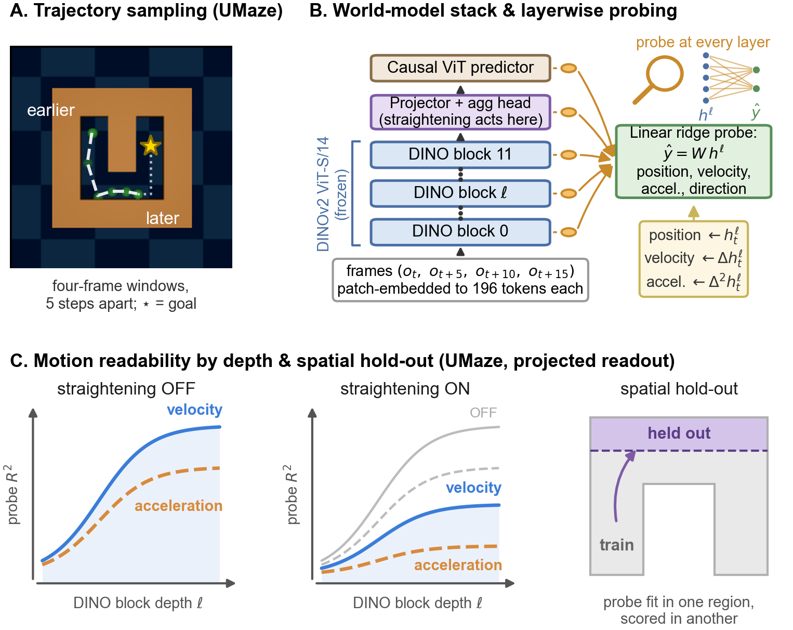

Probing Physical Readability Under Temporal Straightening in Visual World Models
Joint-embedding world models perform latent planning by predicting how visual representations change under candidate actions and comparing predicted states with a goal in latent space. Temporal straightening improves planning in the training protocol introduced by Wang et al, but its effect on the information available inside the model has not been measured directly. We reproduce the best-performing straightening-OFF and straightening-ON configurations reported in that work, preserving their prescribed learning rates, and train layer-wise linear probes for position, velocity, acceleration, speed, direction, and object orientation across UMaze, Wall, and PushT. Because DINOv2 encodes one frame at a time, we probe position from individual features, velocity from first temporal differences, and acceleration from second temporal differences. Position is strongly readable from individual frames, whereas translational motion is much more readable from temporal changes. PushT object orientation is readable while angular velocity and acceleration remain weak. Because the frozen DINO features are identical across configurations, differences appear only after the learned projection head and in the dynamics predictor, and they are environment dependent: the projected readout weakens substantially on UMaze, changes only modestly on Wall while becoming readable earlier, and improves a subset of spatial PushT readouts. Our results characterize what changes under the published straightening configuration, while showing that linear readability alone does not establish whether the planner uses the decoded information.